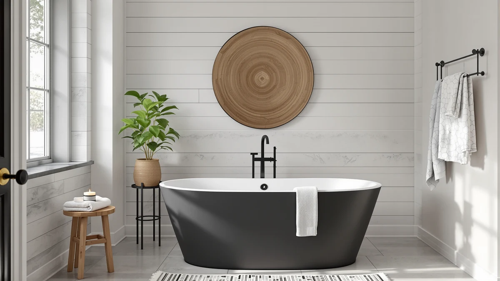

MonBlari 59" Acrylic Freestanding Review (2026): Worth It?
Prices and picks verified as of September 2026. Independent, reader-supported reviews.


Quick Answer
This MonBlari 59" acrylic freestanding review found the tub's main appeal is its middle-of-the-road length: at 59 inches it splits the difference between the compact Garvee 49" and the two longer WOODBRIDGE tubs compared below. At $939.00 it costs more than all three alternatives, including tubs with up to twelve additional inches of length, and MonBlari does not publish capacity or interior depth the way some listings do. If a 59-inch footprint fits your bathroom better than a shorter or longer tub, the MonBlari earns its price; if you can flex on length, one of the WOODBRIDGE options saves you money.
Our pick: MonBlari 59" Acrylic Freestanding Bathtub, $939.00 Check Price on Amazon
Bottom line: our top pick is the MonBlari 59" Acrylic Freestanding Bathtub at $939.
Things to Know Before You Buy
- This MonBlari 59" acrylic freestanding review compares the tub's price and length against three acrylic alternatives, since MonBlari's listing doesn't publish water capacity or interior depth.
- At $939.00, the MonBlari costs more than the Garvee 49", the WOODBRIDGE 67", and the WOODBRIDGE 71", a gap that runs as high as $189.52.
- Its 59-inch length splits the difference between the shortest and longest tubs in this review, a fit for bathrooms too small for a 67-inch or 71-inch tub but too large for a compact corner soaker.
- Like every tub compared here, it ships without a drain, overflow, or faucet, so budget for that hardware separately.
- Freestanding tubs expose their plumbing connections, so confirm your bathroom's rough-in matches before you order.
The question here is whether the MonBlari's $939.00 price holds up against three shorter and longer acrylic alternatives, and whether its published specs give buyers enough to decide before they order. At 59 inches, the MonBlari sits between the compact Garvee 49" and the two longer WOODBRIDGE tubs covered in this review, aiming for a middle ground that fits bathrooms too small for a 67-inch soaker but too large for a corner tub.
We priced the MonBlari against the Garvee 49", the WOODBRIDGE 67", and the WOODBRIDGE 71", all listed under $770.00, and none of them beat the MonBlari on price. That gap is the central question this review answers: does the middle-of-the-road length justify paying up to $189.52 more than a tub with twelve extra inches of soaking room?
Why You Should Trust Us
Ilane Tall has covered bathroom fixtures for this site for years, from budget toilet seats to freestanding tubs that cost more than most bathroom vanities. For this MonBlari 59" acrylic freestanding review, we checked MonBlari's published listing details, compared current Amazon pricing across four acrylic freestanding tubs, and weighed each one against the plumbing and floor space it demands.
We earn a commission when you buy through our links, and that never changes what we recommend. When a tub has a real limitation, like MonBlari's missing capacity and material specs next to competitors that publish more detail, we say so directly instead of glossing over it.
Our Research Experience
For this MonBlari 59" acrylic freestanding review we focused on the two things that decide whether an acrylic soaking tub earns its price: how its length compares with realistic alternatives, and what it costs once you line it up against the field. MonBlari's shell measures 59 inches, a length that sits squarely between the compact Garvee 49" and the two longer WOODBRIDGE tubs we compare it against, so it reads as a compromise pick rather than a specialist for either a cramped bathroom or an oversized one.
Specification depth was the other variable we weighed closely. MonBlari's listing does not publish water capacity, interior depth, shell weight, or a detailed material breakdown beyond the acrylic construction named in the title, gaps that stood out once we lined it up against the WOODBRIDGE listings, which spell out more of those details for buyers comparing tubs on paper.
We priced out the full setup the way any buyer would have to. The MonBlari does not ship with a drain or overflow hardware preinstalled, so factor that cost plus a faucet, supply lines, and installation labor on top of the $939.00 sticker price, the same requirement that applies to every tub in this review.
Price positioning mattered most in our assessment. At $939.00, the MonBlari is the most expensive tub in this review by a wide margin, up to $189.52 more than the WOODBRIDGE 71", a tub with twelve additional inches of length. That premium buys a length in between two extremes, not a longer soak or a more detailed spec sheet.
Overview & Specs

MonBlari 59" Acrylic Freestanding Bathtub
What we like
- 59-inch acrylic shell splits the difference between the compact Garvee 49" and the two longer WOODBRIDGE tubs in this review
- Acrylic surface should resist household chemicals and cosmetic products the way most acrylic tubs do
- A length that fits bathrooms too small for a 67-inch or 71-inch soaker but too large for a compact corner tub
Flaws but not dealbreakers
- At $939.00, it's the most expensive of the four tubs compared in this review, up to $189.52 more than the WOODBRIDGE 71"
- MonBlari does not publish water capacity, interior depth, weight, or exact shell material composition
- No drain, overflow, or faucet included, so budget for that hardware separately
| Material | — |
| Size | 59 Inch |
The MonBlari builds its case on length positioning rather than raw specs. Its 59-inch acrylic shell splits the difference between the Garvee 49" and the two WOODBRIDGE tubs at 67 and 71 inches covered in this review, aiming at a bathroom that's too tight for the longest soakers but too roomy for a compact tub. MonBlari's listing doesn't spell out water capacity, interior depth, or exact material composition, which makes it harder to compare on paper against the more detailed WOODBRIDGE listings further down this review.
At $939.00, the MonBlari costs more than every other tub we compare it against here, including the Garvee 49" at $761.84, the WOODBRIDGE 67" at $759.00, and the WOODBRIDGE 71" at $749.48, the last of which is also twelve inches longer. That premium buys a middle-ground length and nothing else that MonBlari discloses, so the tub makes the most sense for a buyer who specifically needs a 59-inch footprint and is willing to pay for it without a full spec sheet to back up the price.
What We Liked
Length positioning is the standout feature here. At 59 inches, the tub fits a bathroom that's too small for the WOODBRIDGE 67" or WOODBRIDGE 71" but too large for the compact Garvee 49", a gap none of the three alternatives in this review fill as directly.
The acrylic build also stood out for its simplicity. A single-material shell means fewer seams and a lighter overall tub than cast iron or steel alternatives, and that also makes it easier for two people to carry into a bathroom during installation.
Sizing clarity was another point in its favor. MonBlari states the 59-inch length plainly in the title and listing, so buyers know exactly what floor space to plan for before they order, even though other specs are harder to pin down.
What Could Be Better
Missing specifications are the tub's clearest limitation. MonBlari does not publish water capacity, interior depth, shell weight, or a detailed material breakdown, so buyers get less information here than the WOODBRIDGE listings give for a lower price.
Price is the other tradeoff. At $939.00, the MonBlari costs $177.16 more than the Garvee 49", $180.00 more than the WOODBRIDGE 67", and $189.52 more than the WOODBRIDGE 71", which is also the longest tub in this comparison. Buyers pay here for a length in between two extremes, not for the lowest price or the most published detail in this review.
Hardware isn't included either. Like every tub compared here, the MonBlari ships without a drain, overflow, or faucet, so factor that cost and the matching installation labor into the total budget before committing to the $939.00 sticker price.
Who Is It For?
Buy the MonBlari if your bathroom needs a length between the extremes covered here, too tight for a 67-inch or 71-inch tub but too large for a 49-inch compact model. It suits a buyer who has already measured a 59-inch footprint and doesn't want to redesign the layout around a different length.
It also makes sense for someone who values a simple, known footprint over a fully documented spec sheet, since MonBlari discloses less capacity and material detail than the WOODBRIDGE alternatives. Skip it if you want the most published information before you buy, or if price is the deciding factor, since all three alternatives here cost less.
Buyers who want more length for less money should look at the WOODBRIDGE 71" instead. It costs $189.52 less than the MonBlari while offering twelve additional inches, a better tradeoff for anyone who prioritizes soaking room over a middle-ground footprint.
Alternatives to Consider
If the MonBlari's $939.00 price or its missing spec sheet rules it out, the other three tubs in this MonBlari 59" acrylic freestanding review offer a different tradeoff. Each one swaps the MonBlari's middle-ground length for a lower price, a smaller footprint, or extra room to stretch out.

Editor’s Pick
49 Inch Freestanding Acrylic Bathtub
The Garvee 49" is the shortest and cheapest tub in this comparison, priced $177.16 below the MonBlari. It skips the MonBlari's middle-ground length for a compact freestanding profile, which makes it a better fit for a smaller bathroom where every inch of floor space counts. Garvee's listing, like MonBlari's, doesn't publish detailed capacity or material specs, so buyers aren't gaining spec-sheet transparency by choosing this tub over the MonBlari, only saving money and floor space. If a compact footprint and a lower price matter more than a 59-inch length, the Garvee 49" is the pick.
$761.84
Check Price on Amazon
Best Value
WOODBRIDGE 67" Acrylic Freestanding Bathtub
The WOODBRIDGE 67" gives buyers eight more inches than the MonBlari while costing $180.00 less, making it the stronger buy for anyone who wants extra soaking room without paying a premium. It doesn't match the MonBlari's compact 59-inch footprint, so measure the bathroom before swapping in the extra length. WOODBRIDGE's listing also spells out more published detail than MonBlari's, giving buyers who compare specs sheet to specs sheet more to go on. For a longer tub at a lower price, the WOODBRIDGE 67" is a reasonable swap.
$759.00
Check Price on Amazon
Premium Choice
WOODBRIDGE 71" Acrylic Freestanding Bathtub
The WOODBRIDGE 71" is the longest tub in this review at 71 inches, twelve inches more than the MonBlari, and it's also the cheapest option here at $749.48, a full $189.52 below the MonBlari's price. That extra length suits a taller bather who wants to stretch out, a benefit the MonBlari's middle-ground sizing doesn't provide since it targets a more universal footprint over maximum room. For the most floor length at the lowest price, and no need for a compact fit, the WOODBRIDGE 71" is the strongest pick in this comparison.
$749.48
Check Price on AmazonWhat size bathroom fits the MonBlari 59" freestanding tub?
At 59 inches long, the MonBlari fits a bathroom that's too tight for the WOODBRIDGE 67" or WOODBRIDGE 71" but too roomy for the compact Garvee 49".
Does the MonBlari 59" tub include a drain or faucet?
MonBlari's listing doesn't call out included drain or overflow hardware, so budget for that separately along with a floor-mount or freestanding faucet, the same requirement that applies to the Garvee and WOODBRIDGE tubs in this review.
Frequently Asked Questions
What size bathroom fits the MonBlari 59" freestanding tub?
At 59 inches long, the MonBlari fits a bathroom that's too tight for the WOODBRIDGE 67" or WOODBRIDGE 71" but too roomy for the compact Garvee 49". MonBlari doesn't publish an exact width or interior depth in its listing, so measure your floor space and door clearance before you order.
Does the MonBlari 59" tub include a drain or faucet?
MonBlari's listing doesn't call out included drain or overflow hardware, so budget for that separately along with a floor-mount or freestanding faucet, the same requirement that applies to the Garvee and WOODBRIDGE tubs in this review.
Is the MonBlari 59" acrylic freestanding tub worth it over the Garvee or WOODBRIDGE alternatives?
It depends on what your bathroom needs. The MonBlari's main advantage is its middle-ground length, while the Garvee 49" costs less for a smaller footprint and the WOODBRIDGE options cost less while offering more room. If a 59-inch length fits your space better than a shorter or longer tub, the MonBlari is the stronger buy.
Final Verdict
It comes down to length versus price. The MonBlari wins on footprint with a 59-inch shell that splits the difference between a compact tub and a full-length soaker, even though it's the most expensive tub here and MonBlari publishes less capacity and material detail than its rivals. If a middle-ground length matters more to you than a full spec sheet or the lowest price, the MonBlari is the tub to buy. Choose the Garvee 49" if you need the smallest footprint, the WOODBRIDGE 67" if you want extra room for less money, or the WOODBRIDGE 71" if maximum length matters more than a compact fit.